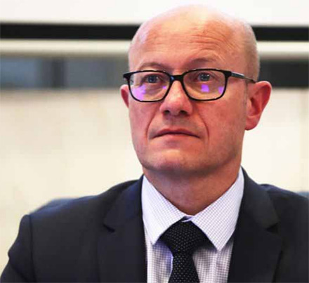

Gironde
Des "projets jeunes" financés
Jean-Luc Gleyze a souhaité que les « projets participatifs » résistent à la crise sanitaire. ARCHIVES GUILLAUME BONNAUD
Département - 700 000 euros seront alloués à des projetsparticipatifs et écolos
Des pré-ados et de jeunes adultes invités à formuler des idées qui, soumises aux votes des habitants, deviendront des projets. Tel est le principe du " Budget participatif " lancé hier matin par le président du Département, Jean-Luc Gleyze.
" Sud Ouest " En quoi consiste cette opération ?
Jean-Luc Gleyze Il s'agit d'une initiative rare en France. Ce budget participatif avait été imaginé, et le principe voté, avant la pandémie. Il s'agit de donner la possibilité à de jeunes Girondins, de 11 à 30 ans, de se mobiliser pour la transformation écologique et sociale du territoire à l'échelle de l'individu. Ces jeunes sont celles et ceux qui dessineront le monde de demain.